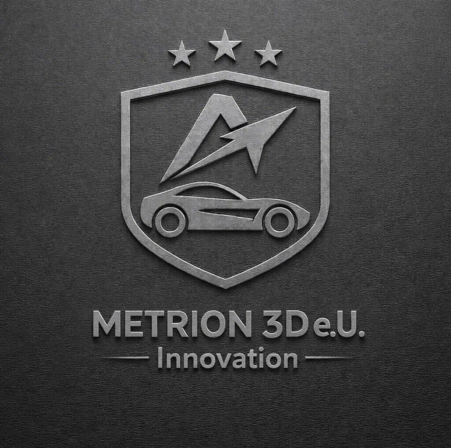

Precision FDM printing for parts that have to work.
Metrion 3D partners with automotive, architecture, electronics and industrial engineering teams across Austria — from a single functional prototype to short production runs.

Built for teams that need parts to fit the first time.
Every print starts as a real design problem, not a stock template. We work directly with engineers, architects and makers to get tolerances, material and finish right.
Automotive
Functional prototypes, jigs, fixtures and low-volume replacement parts for workshops and OEM suppliers.
Architecture
Massing models, facade mock-ups and detail studies at the scale and finish a presentation needs.
Electronics
Enclosures, housings and mounts sized to real components, with clearances that account for print tolerance.
Industrial engineering
Custom tooling, gauges and hard-to-source spare parts, produced from a drawing or a worn original.
From file to finished part in four steps.
Send your file
Share an STL/STEP file and target use case — or a sketch and dimensions if you don't have a model yet.
Quote & material check
You get a fixed price and a material recommendation (PLA or PETG) based on how the part will be used.
Print & inspect
Each part is printed to spec and checked for dimensional accuracy and finish before it ships.
Ship or collect
Delivered by post within Austria and the EU, or picked up locally in Steyr.
Two materials, chosen deliberately per part.
Metrion 3D prints in PLA and PETG. Which one fits your part depends on where it will live and what it needs to survive — we'll confirm this with you at the quote stage.
| Material | Good for | Notes |
|---|---|---|
| PLA | Presentation models, indoor prototypes, low-load housings, display and architectural pieces | Crisp detail and a clean finish; best kept out of direct sun and hot environments |
| PETG | Functional and outdoor parts, jigs and fixtures, enclosures, parts needing more impact and heat resistance | Tougher and more weather-resistant than PLA, with a slightly less matte finish |
General guidance only — exact performance depends on part geometry, print settings and environment. For load-bearing or safety-relevant parts, tell us the application and we'll advise on material and design.
A direct line to the person printing your part.
One point of contact
You speak directly with the person running the print, not a sales layer — faster answers, fewer misunderstandings.
Professional-grade equipment
Prints run on a Bambu Lab H2C, chosen for consistent dimensional accuracy on functional and presentation parts alike.
Based in Upper Austria
Local pickup in Steyr, straightforward shipping across Austria and the EU, and communication in German, English or Turkish.
Built for small and mid runs
No minimum order pressure — a single prototype gets the same attention as a short production batch.
Tell us what you need to make.
- contact@metrion3d.at
- Location
- Steyr, Upper Austria
- Languages
- Türkçe, English, Deutsch